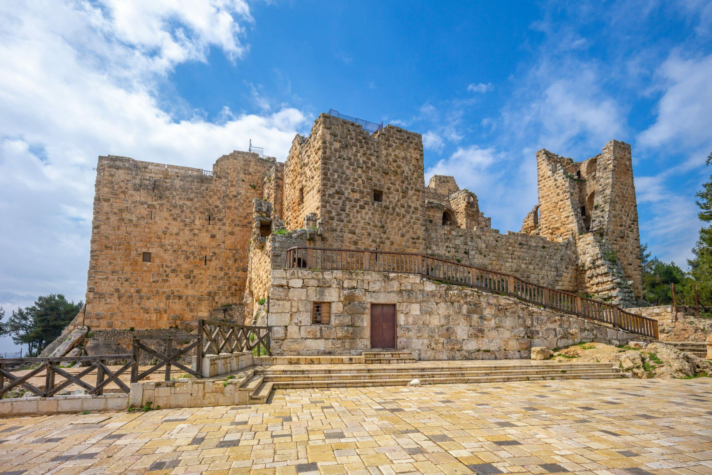

تُعد قلعة عجلون من أبرز المعالم التاريخية في الأردن، وتقع على قمة جبل في محافظة عجلون شمال المملكة. بُنيت القلعة في عهد القائد عز الدين أسامة بأمر من صلاح الدين الأيوبي في القرن الثاني عشر الميلادي، وكان الهدف منها حماية المنطقة ومراقبة الطرق المهمة. وتتميز القلعة بتصميمها المعماري الجميل وإطلالتها الرائعة على الجبال والغابات.